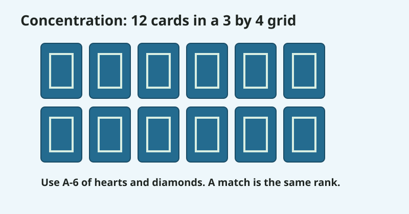
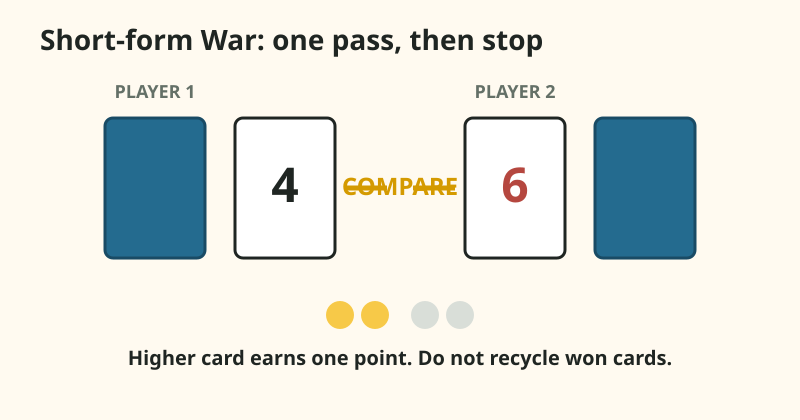
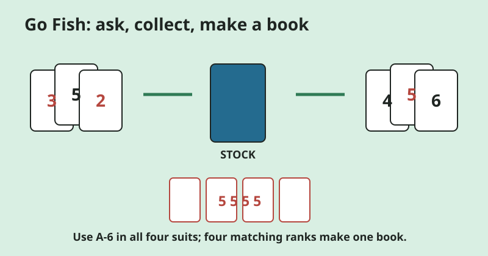
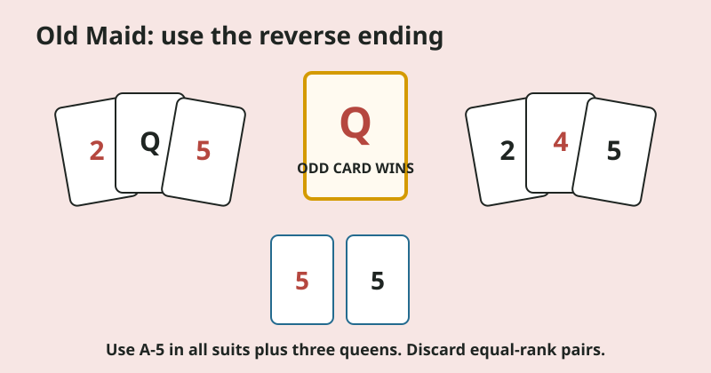
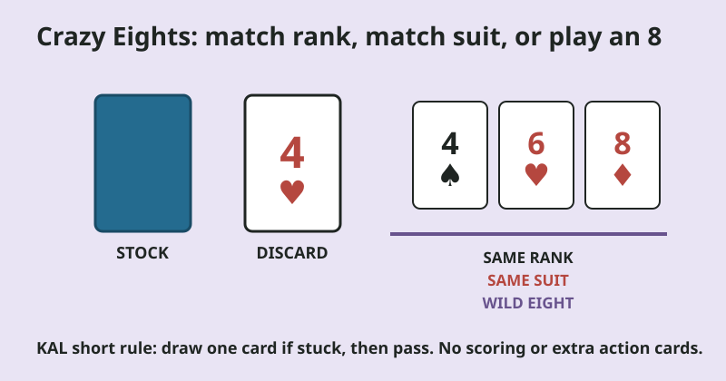

Start here
Choose the rule load, not just the game name.
| Starting signal | Open this game | Players | What to track | Pace and contact |
|---|---|---|---|---|
| Can look, remember, and return cards to the same spot | Concentration | 2+ | Same-rank pairs | Turn-based; no reaching for a shared pile |
| Can compare two ranks | Short-form War | 2 | Which rank is higher | Quick reveals; no captured-card grabbing |
| Can name a rank and ask another player for it | Go Fish | 2-4 | Requests and books of four | Conversational; turns can continue after a match |
| Can form pairs and choose one hidden card | Reverse Old Maid | 2+ | Pairs and a hand of up to 12 cards with two players | Suspense without naming one loser |
| Can match either rank or suit and choose a suit | Simple Crazy Eights | 2-4 | Rank, suit, and wild eights | Turn-based; highest rule load here |
Player counts describe these frozen starting versions. Linked publishers describe additional player counts and full-deck rules.
Parent boundary
One adult owns the shuffle, disputes, and stop call.
- Use cards on a stable table or clear floor, away from food, drinks, stairs, and mouths.
- Keep the first round to the frozen rules. Do not add slapping, speed grabs, penalties, or teasing.
- Stop if cards are being grabbed, thrown, bent, or used to target another player.
- Reset by stacking every card face down and choosing a lower-rule game from the table above.
These are conservative supervision and stop boundaries, not evidence that KAL observed any setup to be safe or frustration-free.
Remember locations
1. Concentration
Choose this when a shared face-down grid is easier than holding a hand of cards.

Bicycle and Pagat both use same-rank pairs: turn two cards, keep a match and take another turn, or return a non-match to the same positions before the next player.
Use exactly 12 cards: ace through six of hearts and diamonds. This creates six possible pairs and a stable 3-by-4 grid. The reduced layout is editorial and untested.
- Shuffle the 12 cards and lay them face down in three rows of four.
- Turn any two cards face up without moving them.
- If the ranks match, keep the pair and turn two more.
- If they do not match, let everyone look, then turn both down in the same spots.
- When the grid is empty, count pairs. Tied counts stay tied.
Say: "Turn two. Same rank? Keep them. Different? Put them back in the same spots."
Reset: If 12 cards create too much tracking, use ace through four of hearts and diamonds for an eight-card grid. That smaller option is also editorial and untested.
Compare ranks
2. Finite short-form War
Choose this for two players when comparing ranks is the only rule you want to introduce.

Canonical War divides a deck between two players, reveals cards together, awards the cards to the higher rank, and uses a face-down then face-up sequence for ties. Pagat notes that the full game can take a long time.
Use 20 cards, deal 10 each, score one point for each comparison instead of capturing cards, and resolve ties with another face-up comparison instead of Bicycle's face-down stake. The deck, scoring, and tie changes make this an editorial one-pass game, not canonical War.
- Shuffle 2 through 6 in all four suits. Deal 10 cards face down to each player.
- Each player flips the top card at the same time.
- The higher rank scores one point. Suits do not matter.
- For a tie, each player flips one more card. The higher new card scores one point; repeat only while both stacks have cards.
- Stop when both stacks are empty. Highest point total wins; a tie stays a tie.
Say: "Flip together. Which rank is higher? That side gets one point."
Reset: If rank comparison is not settled, lay one card of each rank from 2 to 6 in order beside the stacks. Do not add face-card values yet.
Ask and collect
3. Go Fish
Choose this when players can name a rank, hold several cards, and ask one person a direct question.

Bicycle's Go Fish uses a stock and books of four. A player asks for a rank already in their hand, receives all cards of that rank if available, or draws from the stock after "Go fish." A successful request continues the turn. An empty-handed player draws one card from the stock when possible; without stock, that player is out of the round.
Use only ace through six in all four suits and deal five cards to every player. This smaller 24-card version keeps Bicycle's asking and four-card-book rules but changes its deck and deal.
- Deal five cards to each player. Put the rest face down as the stock.
- Ask one player for a rank already in your hand: "Do you have any fives?"
- If yes, that player gives every five they hold, and you ask again.
- If no and the stock has cards, draw one. Continue only if it is the requested rank; otherwise the turn moves left. If the stock is empty, draw nothing and move the turn left.
- At the start of your turn, if your hand is empty, draw one card from the stock and use that rank for your request. If the stock is empty too, you are out of the round and turns skip you.
- Lay down four equal ranks as a book. When all six books are made, most books wins.
Say: "Ask for a rank you already have. If they do not have it, draw one from the pond."
Reset: Keep hands face up for a teaching round if everyone agrees. This removes hidden information but does not change the ask-and-collect loop.
Pair and draw
4. Reverse-ending Old Maid
Choose this for the pair-making loop, but agree before dealing that the final odd queen wins.

Bicycle and Pagat remove one queen from a standard deck, discard equal-rank pairs, and pass a hidden hand for the next player to draw from. Players with no cards leave the rotation. Pagat documents a reverse version in which the final odd-card holder wins.
Use ace through five in all four suits plus three queens. The smaller 23-card deck is editorial; the reverse ending is source-backed. Call the final card the "odd queen," not a label for the player.
- Deal all 23 cards. Uneven hands are fine.
- Every player discards all equal-rank pairs. With three of one rank, discard only two.
- Offer your remaining cards face down to the player on your left.
- That player draws one card, discards a new pair if formed, then offers their hand left.
- A player with no cards is out of the rotation. Skip that player and continue with the next player who still has cards.
- Continue until one odd queen remains. Its holder wins this reverse round.
Say: "Make every pair you can. Draw one hidden card. The last odd queen wins."
Holding reset: For the initial pair search, an adult can lay one player's hand face up for that player, help remove pairs, then gather and fan the remaining cards face down before a draw. This KAL teaching rescue is editorial and reveals ranks during sorting. Stop rule: End the round immediately if the odd-card idea becomes a way to mock, blame, or target another player.
Match rank or suit
5. Simple Crazy Eights
Use this as the stretch option when matching a rank or a suit and choosing a new suit are both manageable.

Bicycle and Pagat both use a stock and discard pile. A legal card matches the top discard by rank or suit; an eight is wild and its player names the next suit. The first empty hand wins.
Use 28 cards, deal five each, draw at most one card when stuck, and omit scoring, "last card" penalties, skip, reverse, draw-two, and stacking rules. Bicycle's canonical version draws until a play is possible, so the one-card draw is an editorial simplification.
- Deal five cards to each player. Put the rest face down as the stock.
- Turn over a starter card. If it is an eight, bury it and turn another.
- Play one card matching the top discard by rank or suit, or play any eight and name a suit.
- If no card plays, draw one. Play it if legal; otherwise pass.
- The first empty hand wins. If the stock is empty and everyone passes once, stop the round without adding a penalty.
Say: "Match the number, match the suit, or play an eight and choose the next suit."
Reset: Keep one rank card, one suit card, and one eight face up beside the discard as a visual reminder. Remove the reminder cards from play.
Why these versions stay small
Rules frozen on purpose.
| Game | Kept from the base rules | KAL editorial change | Left out |
|---|---|---|---|
| Concentration | Same-rank pairs and fixed positions | 12-card grid | Full 52-card spread |
| War | Simultaneous reveal and rank comparison | 20-card deck, one-pass points, face-up-only ties | Captured-card recycling, face-down tie stakes, and an open-ended finish |
| Go Fish | Ask for held ranks; books of four | A-6 deck and five-card hands | Authors and pair variants |
| Old Maid | Pair, discard, hidden draw | Reduced deck | Named-loser ending; reverse ending is from Pagat |
| Crazy Eights | Match rank/suit; eights wild | Reduced deck and draw-one limit | Scoring, penalties, and extra action cards |
Before the first deal
Common parent questions.
Which game has the fewest rules?
Short-form War asks two players to compare ranks. Concentration adds hidden locations but no hand management. That ordering is KAL editorial judgment, not observed child evidence.
Can a 4-year-old play these games?
Bicycle labels Go Fish, Concentration, Old Maid, and Crazy Eights as 4+ and War as 3+. Publisher age labels are context, not a KAL guarantee. Use the readiness signals in the chooser and move down in rule load when needed.
Do I need every card in the deck?
No. Every KAL starting version uses a named subset so the setup can be reproduced. Keep the unused cards in the box and do not add jokers.
Why are Snap and Slapjack missing?
Both games add simultaneous speed or slapping rules that need a separate rule-design review. This first chooser stays with five games that can be taught without a shared-pile slap.
Evidence
Rules and adaptation sources.
Sources were checked Aug. 1, 2026. Bicycle is the base publisher rule set. Pagat is used to identify established variants and rule ambiguities. DREME supports the general practice of breaking an activity into smaller parts or changing complexity; it does not validate KAL's exact setups.
- Go Fish: Bicycle and Pagat
- Concentration: Bicycle and Pagat / Pelmanism
- War: Bicycle and Pagat
- Old Maid: Bicycle and Pagat
- Crazy Eights: Bicycle and Pagat
- Adapting rule load: Stanford DREME Family Math
KAL created the diagrams and editorial variants from desk research. They are not photos, observations, or evidence of a family session.